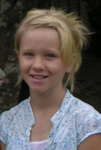

|  |
JASMINE Fall 2004 Jasmine is in 3rd grade this year. She already has boys in the class that like her. She is wanting to do some type of sport but having trouble deciding what to do. Her true love lies in track, but no program exists here for track for her age, so we are training and waiting for her to find what she likes. She did swim lessons and was the star of the back stroke. Like a fish in the water, you would think she had webbed feet. Her legs are her strength. She enjoys...there must be something! Want to know more about Jasmine? CLICK HERE for her spotlight. |